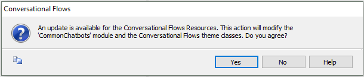

A Module called CommonChatbots is created in the Knowledge Base, containing all the Chatbot generator pattern resources. In the Build process, and in the Generate bot action, it is checked whether those resources have any change in comparison with the version of the resources that you have in the KB, and depending on the Keep Resources Updated property, they are updated or not. When the resources need to be updated in the KB, if the property Keep Resources Updated property = prompt, the following dialog is shown:  The Chatbot generator resources to be updated are all the objects under the CommonChatbots module. DataGXChatMessage: Table used to store messages and their metadata.
GXChatUser: Table in which users and their devices are stored.
GetUserId procedure: The procedure called GetUserId, which is consulted in runtime to obtain the user's ID, by default returns the same ID (as an example). However, you can modify it to customize the way the ID is obtained (modify the procedure or save it as another and change the call, whichever is better for you). In this way, you can manage the users and their IDs as you wish, only modifying that entry point. ThemesThe Carmine and CarmineSD Themes include the classes used to style the UI of the chatbot. These are default classes prefixed by "CF" which give a predefined style to the chatbot. UI objects
Note: Up to Genexus 17 upgrade 0:
ContextGetContext and SetContext procedures have the logic to get and update the Chatbot Context from the GXChatMessage table. See HowTo: Manage the Context of the conversation through the Chatbot API for more information.
Note: These objects can be modified as desired because they aren't updated mandatorily every time the pattern is generated (as opposed to the generated objects of the Chatbot generator pattern). They are updated considering the Keep Resources Updated property.
The selection to update the resources is done in the Build process, and in the Generate bot action.
|
| Backlinks | |
| Chatbot generator | |
| Toc:Chatbots in GeneXus | HowTo: Manage the Context of the conversation through the Chatbot API |
| Keep Resources Updated property |